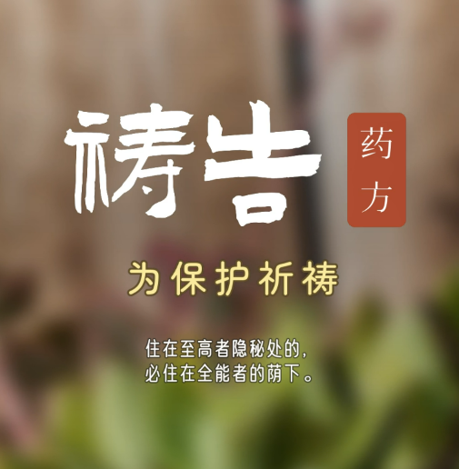

昨天让 Claude Code 帮我做视频，处理字体排版。
刚开始我没告诉它具体的字体名字，让它先分析我自己做的视频，学习里面的字体和排版风格。它忙了半天，下载了一堆字体。我看了看结果，总觉得哪里不对。那一刻我明白了它的上限在哪——它再聪明，没有上下文指导的时候也只能瞎猜。
我本想自己动手改了。但脑子里突然冒出另一个念头：为什么不把它当实习生来训呢？
于是我给了它第二次机会。先把自己电脑里的字体文件直接给它——绕开搜索和下载那一步，省去不必要的环节。还让它把整个工作流程写下来，下次可以直接复用。
第二次改完，看着还是不对味。这次我没急着否定，让它自己给排版设计打个分。它还挺认真，搬出一套审美标准来。说实话我记不住具体评分维度了，但它确实有自己的一套评判体系。它想了好一会儿，提出三条修改意见。后面两条我忘了具体细节，但第一条我记得很清楚——它说把标题中的两个字改成印章的形式。
我们调了调字体，试了试颜色和位置。结果出来的效果真挺好看。那个印章的点子，我自己是绝对想不到的。这大概就是人和机器碰撞的价值——你提供素材和判断，它提供你视野之外的组合方式。

这让我想起之前读到的一本书里说的：要把智能体当员工来培训，而不是当搜索引擎来使唤。员工需要知道你的做事风格、审美偏好、工作习惯。你越早给它建立这些上下文，它就越早真正帮得上忙。
说到这，又想起玲玲昨天提醒我的——把拍的照片给 AI 看看，让它点评拍摄角度，说不定有收获。我试了，确实得到了一些以前没注意到的建议。原来一个物体换几个角度拍，效果差这么多。这也算把 AI 当摄影师导师了。
今天为什么突然想记录这些呢？因为看了鲁豫采访姜思达的视频。人的生命气息，多半来自表达。还记得他说的那句——AI 写的东西像现代八股文，格式工整，没有语病的废话。
我想了想，道理可能是这样：你能写出活的东西，前提是你自己先活着、感受着、表达着。我打字不容易，但现在能打了，为什么不写写呢？记录本身就是一种练习，也是抵抗八股的方式。
——2026年7月17日，霍巴特